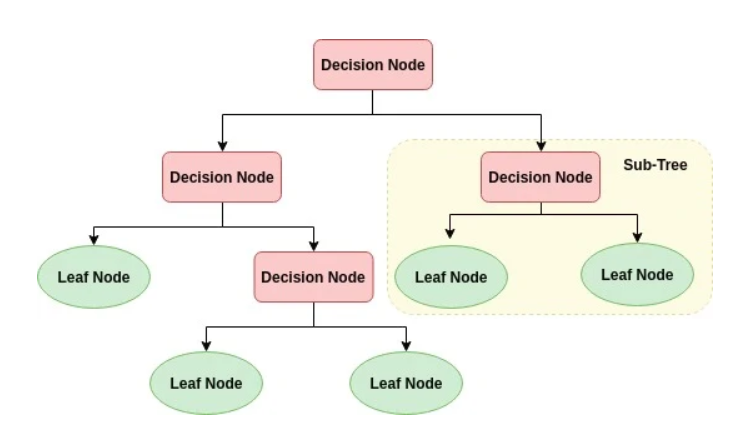

Decision Tree Algorithm
What is Decision Tree Algorithm?
A decision tree algorithm is a supervised learning method used for classification and
regression tasks in machine learning. It is a tree-like structure where each internal
node represents a "decision" based on a feature, each branch represents an outcome of that
decision, and each leaf node represents a class label or regression value. Decision trees are
popular because they are easy to understand, interpret, and visualize.
Decision Tree Classification Algorithm
- Decision Tree is a Supervised learning technique that can
be used for both classification and Regression
problems, but mostly it is preferred for solving
Classification problems. It is a tree-structured classifier,
where internal nodes represent the features of a dataset, branches represent
the decision rules and each leaf node represents the outcome.
- In a Decision tree, there are two nodes,
which are the Decision Node and Leaf Node. Decision nodes are used to
make any decision and have multiple branches, whereas Leaf nodes are the
output of those decisions and do not contain any further branches.
- The decisions or the test are performed on the
basis of features of the given dataset.
- It is a graphical representation for getting all the possible solutions to a
problem/decision based on given conditions.
- It is called a decision tree because, similar to a tree, it starts with the root node,
which expands on further branches and constructs a tree-like structure.
- In order to build a tree,
we use the CART algorithm, which stands for
Classification and Regression Tree algorithm.
- A decision tree simply asks a question,
and based on the answer (Yes/No),
it further split the tree into subtrees.
Below diagram explains the general structure of a decision tree:

Why use Decision Trees?
There are various algorithms in Machine learning,
so choosing the best algorithm for the given
dataset and problem is the main point to remember while creating a machine learning model.
Below are the two reasons for using the Decision tree:
- Decision Trees usually mimic human thinking ability while making a decision,
so it is easy to understand.
- The logic behind the decision tree can be easily
understood because it shows a tree-like structure.
Decision Tree Terminologies
- Root Node: Root node is from where the decision tree starts.
It represents the entire dataset, which further gets divided
into two or more homogeneous sets.
- Leaf Node: Leaf nodes are the final output node,
and the tree cannot be segregated further after getting a leaf node.
- Splitting: Splitting is the process of dividing the
decision node/root node into sub-nodes according to the
given conditions.
- Branch/Sub Tree: A tree formed by splitting the tree.
- Pruning: Pruning is the process of removing the
unwanted branches from the tree.
- Parent/Child node: The root node of the tree is
called the parent node, and other nodes are called the child nodes.
Advantages of the Decision Tree
- It is simple to understand as it follows the same process which a human follow
while making any decision in real-life.
- It can be very useful for solving decision-related problems.
- It helps to think about all the possible outcomes for a problem.
- There is less requirement of data cleaning compared to other algorithms.
Disadvantages of the Decision Tree
- The decision tree contains lots of layers, which makes it complex.
- It may have an overfitting issue, which can be resolved using the Random Forest algorithm.
- For more class labels, the computational complexity of the decision tree may increase.
Practical applicaion for Decision Tree Algorithm
About Dataset
Imagine that you are a medical researcher compiling data for a study.
You have collected data about a set of patients, all of whom suffered from the same illness.
During their course of treatment,
each patient responded to one of 5 medications, Drug A, Drug B, Drug c, Drug x and y.
Part of your job is to build a model to find out which drug might be appropriate for a
] future patient with the same illness. The features of this dataset are Age, Sex,
Blood Pressure, and the Cholesterol of the patients, and the target is the drug that
each patient responded to.
It is a sample of multiclass classifier, and you can use the training part of the
dataset to build a decision tree, and then use it to predict the class of a unknown
patient, or to prescribe a drug to a new patient.
Data Preprocessing
Applying Decision Tree model:
Output:
Visualizing the Decision Tree: